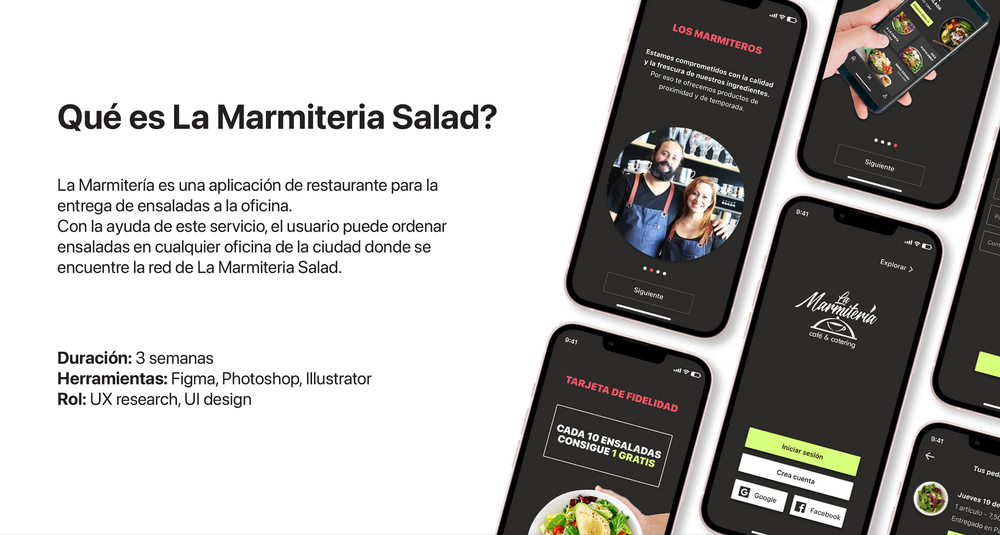
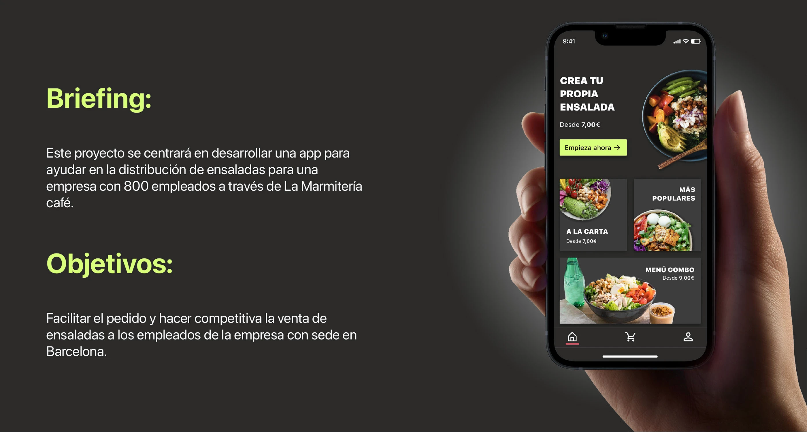
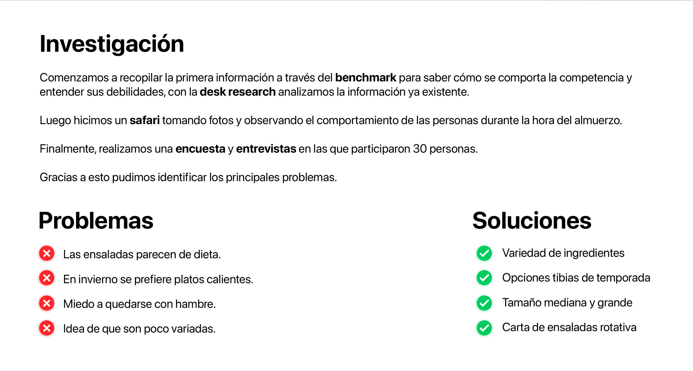
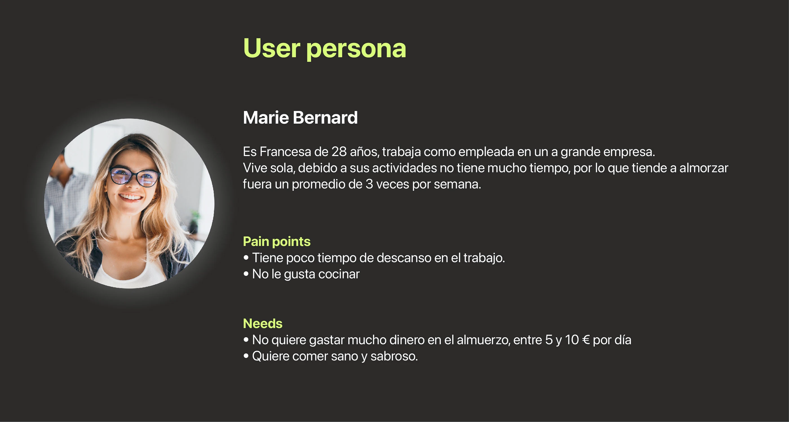
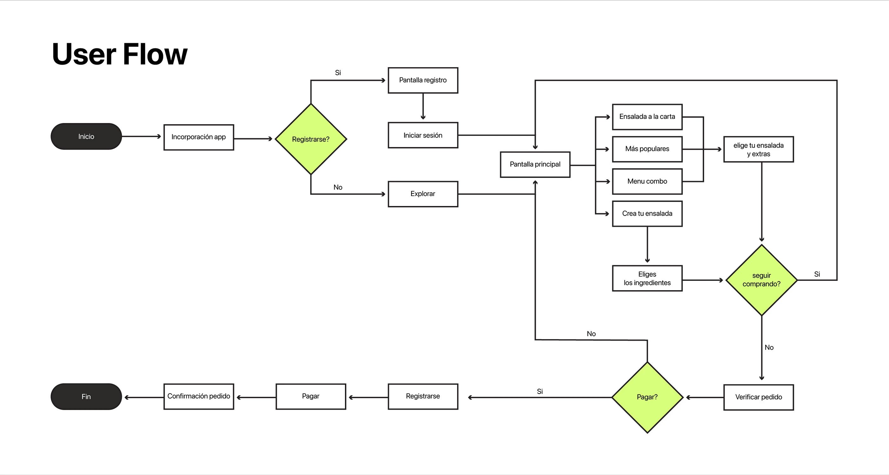
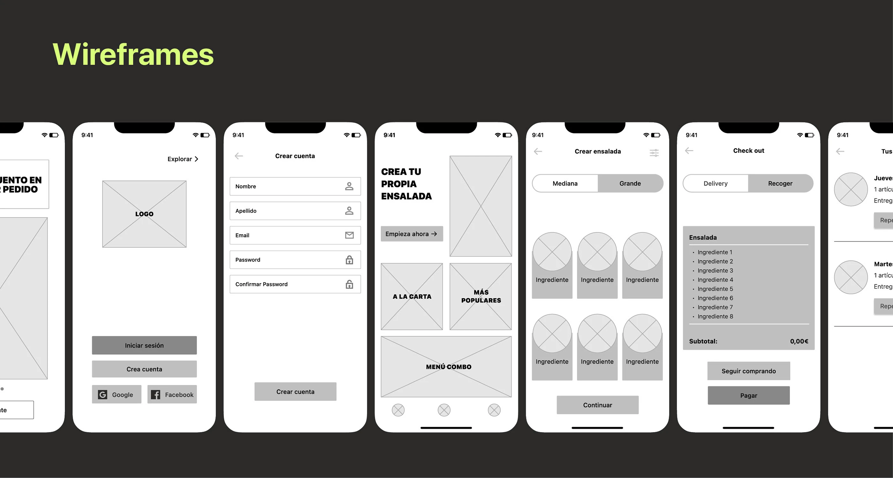
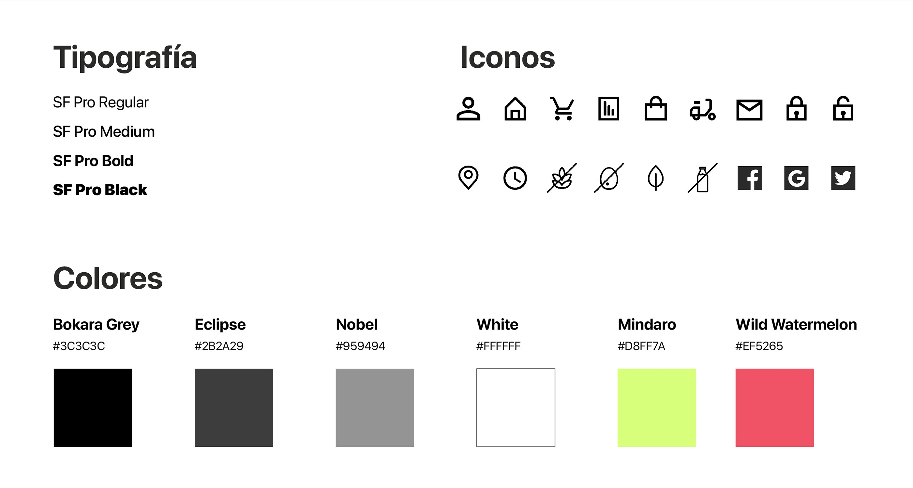
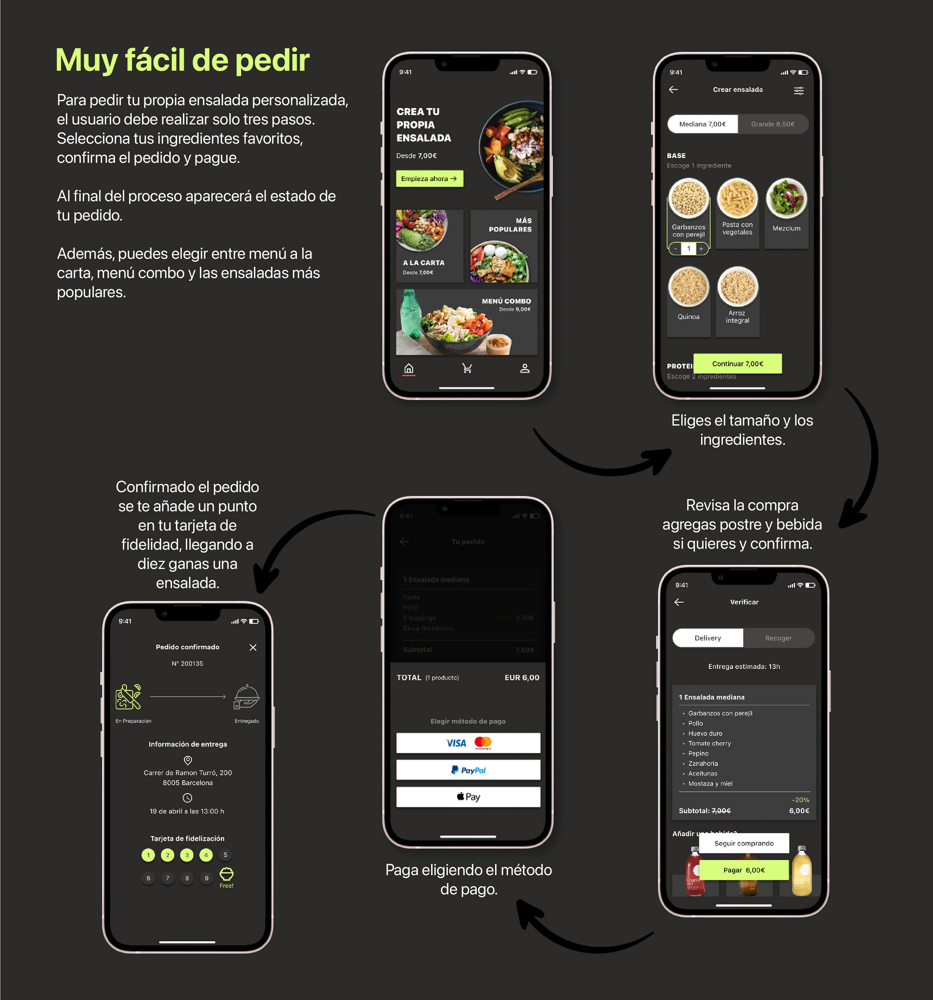
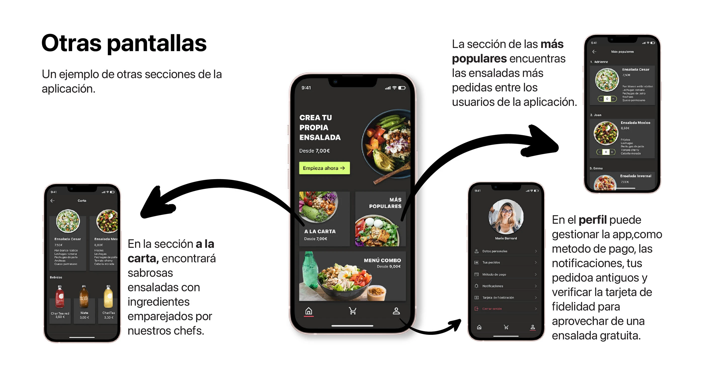

← Back to Projects
La Marmiteria
La Marmiteria is a UX/UI design project created for a restaurant specializing in healthy food delivery. The project focused on designing a simple and intuitive mobile experience, allowing users to browse the menu, customize salads, place orders and manage their loyalty rewards. The case study covers the complete design process, from user research and information architecture to wireframes, interface design and the final prototype.








